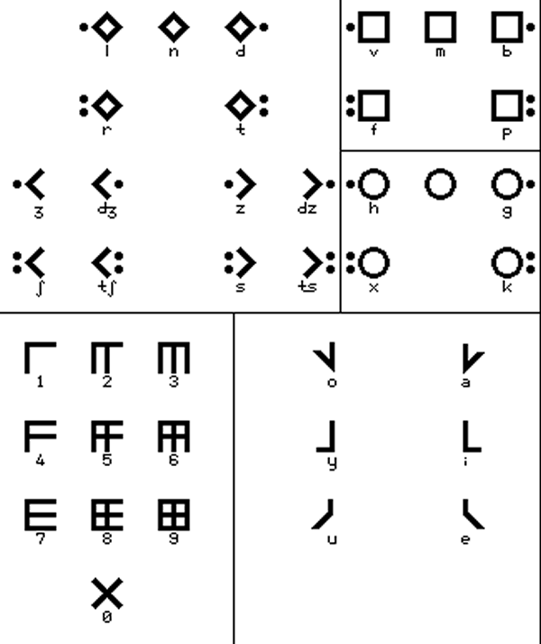

缘起


摘抄：「日语拼音方案」相关
Aziana
Aziana is a syllabary created by Warren Grant and inspired by the Korean, Chinese and Japanese writing systems. The idea was to devise a writing system that looks Asian in origin. It is a syllabary with consonants typically appearing on the top and vowels written underneath them.
Notable features
- Type of writing system: syllabary
- Direction of writing: left to right in horizontal lines
- There are no capital forms.
- There are special forms for an initial vowel or secondary vowel in a syllable and for final M, N, and Ng consonants.
Aziana alphabet
Sample text in Japanese
原文
すべての人間は、生まれながらにして自由であり、かつ、尊厳と権利とについて平等である。人間は、理性と良心とを授けられており、互いに同胞の精神をもって行動しなければならない。
转写
Subete no ningen wa, umarenagara ni shite jiyū de ari, katsu, songen to kenri to ni tsuite byōdō de aru. Ningen wa, risei to ryōshin to o sazukerarete ori, tagai ni dōhō no seishinn o motte kōdō shinakereba naranai.
英译
All human beings are born free and equal in dignity and rights. They are endowed with reason and conscience and should act towards one another in a spirit of brotherhood. («Article 1 of the Universal Declaration of Human Rights»)
Kogo Kana
Kogo Kana is an alternative script for Japanese created by Martin Luan. It is designed to simplify the Japanese writing system, and is based on Martin's Kogor script.
Notable features
- Type of writing system: abugida
- Direction of writing: left to right in horizontal lines, or in vertical columns running from top to bottom and right to left
- Used to write: Japanese
- Each symbol has top and bottom, two parts. Generally the consonants are always on the top, vowels at bottom.
- As other East Asian writing systems, it allows writing in both horizontal and vertical two directions without rotating. The horizontal way is recommended since it would be easier to identify the vowel change.
- There is only one case
- The symbols within one word could be connected for easier reading.
- Some consonants might change the sound but the shape when combining with different vowels, e.g. S + i = Shi , H + u = Fu etc or being used as a particle, e.g. Ha sounds Wa
- There are no diacritics. The voiced and unvoiced letters are indicated by mirrored shapes. A short bar on top functions like a sokuon, which indicates geminate (doubled) consonants, long vowels
Kogo Kana
Sample text (horizontal)
Sample text (vertical)
原文、转写、英译
同上
Kogor
Kogor is a new universal writing system designed by Martin Luan for writing various languages, including most Latin letter based languages, such as English, French, Spanish, Esperanto, etc. With the extended version, it could be used to write Russian, Arabic and Chinese Mandarin (pinyin), Japanese, Korean, etc. Basically it has 32 letters, 30 with specific sound each and 2 representing Q and Y which have similar sound of K and I.
All letters have Upper and lower case two forms individually. When used in a word, letters are connected at bottom. Y in a word has a special short form. The second letter in double letters will be replaced by a short dash below the first letter.
Notable features
- Type of writing system: alphabet
- Direction of writing: left to right in horizontal lines
- All letters are formed by either horizontal or vertical lines, which make the appearance clean and straightforward.
- Similar sounds are paired, such as voiced or voiceless pairs, B-P, F-V,D-T, Z-S, etc, with similar look. The bottom line open to left or right shows the difference.
- The letter shapes are specified by the letter's openings at both upper and lower side, which allow the different version and new letters created under the same principle. For example, this standard Square Version could be adjusted to a curved version and still easily identified.
- Five basic vowels appear as diacritical marks on the vertical stem in lower case type. The upper cases are created by connecting the diacritical mark to the bottom.
- The heavy vertical line is optional in hand written style.
In general, this system is designed to be easily written, read and also adjusted for new letters and styles as required.
Kogor alphabet
Sample text in English
All human beings are born free and equal in dignity and rights.
Sample text in Esperanto
Ĉiuj homoj estas denaske liberaj kaj egalaj laŭ digno kaj rajtoj.
Sample text in French
Tous les êtres humains naissent libres et égaux en dignité et en droits.
Sample text in Spanish
Todos los seres humanos nacen libres e iguales en dignidad y derechos.
Other versions of Kogor for: Esperanto, Japanese, Korean and Russian (PDFs)
Manjikana
Manjikana is an alternative writing system for Japanese created by Fatbardh Kraja in 2018. Being certain that the current writing systems (Kanji, Hiragana, Katakana and Romaji) do not suit the Japanese language, the author was able to determine 8 unresolved issues while writing.
Inspired by the "Manji" symbol (卍), he was able to find 8 solutions, all included in one single writing system. Manjikana fits the Japanese language's characteristics, as well as all its dialects.
Notable features
- The Manjikana writing system consists of only 33 (+ 2 extra) sounds, which are more than enough to write the language; two other sounds are added to simplify the writings of integrated words.
- The entire system is inspired by the Manji symbol. The characters are distributed according to a few criteria, which makes them flow easily. This system is authentic and well-adjusted with the spoken language, though creating a new identity. This system releases the language from the use of the Kanji symbols and the ideas of its Romanization.
- The conclusion that there are 1236 syllables is reached. The system groups the sounds in syllables, based on a certain scheme.
- The system works for the standard japanese and Ainu language and all its dialects, since all of their authentic characteristics have been considered.
- The second level of the system is called Nikana. It groups two to four syllables in different ways, based on 8 different schemes, creating different visual representations for phonetically identic words. This helps the process of heterographics.
- The third level is called Aikana. It allows the writer to explore and experiment with different ways of connecting words to their own limit, without violating the basic rules.
- The first development allowing the vertical connection of words
- The second development allowing the vertical and the horizontal connection of words
- The third development allowing the creation of shapes.
- From the same symbol generates also the numerical system, consisting of 5 main rules:
- The system is decimal
- The number shows its own value
- The number shows its value of the power of tens through its position
- Groups numbers three by three starting from the end.
- Groups all zeros together.
- This system provides great solutions for the existence of homonyms by:
- Identifies the upper or lower accent
- Provides the creation of visually different compositions for phonetically identical words.
- Provides the alternation of the numbers with new syllables used as homonymic suffixes.
- Provides the use of numbers as index signs.
To understand the concept of Manjikana check the scheme below:
Sample text in Manjikana
Manjikana letters
For more details you can download this PDF or check the website: https://www.manjikana.com
Tounoji
Tounoji was invented by Scorupa D. as an alternative way to write Japanese, and is designed to look vaguely similar to Chinese Seal script. The symbols are vertically stacked with a small gap in between, and a vertical line through the center of each word. It was named Tounoji as the stacked symbols looked similar to towers and Tounoji, or 塔の字 (tōnoji), means 'tower letters/characters' in Japanese.
There are two forms of Tounoji: a "Tall" form where each symbol is simply stacked, and a "Short" form, where symbols are further combined within each single-vowel syllable.
Notable features
- Type of writing system: alphabet (tall form) / alphabetic syllbary (short form)
- Direction of writing: right to left and top to bottom in vertical columns
- Used to write: Japanese
- In tall form, if a word starts or ends with e, the word line is extended and capped with a horizontal line.
- In short form, a and e are made taller if the first and last consonant of a syllable would otherwise overlap.
Tounoji alphabet
Sample text (Tall form)
Sample text (Short form)

Eganes
Eganes is the creation of Matt Cheetham, a writer and a student of Maths at Manchester University, England. It is the script for an invented language of the same name.
Notable features
- Eganes is read left to right.
- The most curious aspect of the script is that all of the consonants represent two or more phenomes, but native readers can tell how words are pronounced by context.
- The grid script is based on CV syllables. The shapes of the characters are based on the handwritten shapes, but confined into a square template. They are connected together in rows of equal length. The characters "wrap" to these rows so that words can begin at the end of one row and end at the beginning of the next. The last row is usually centred.
- The grid script is intended to be a script designed by the Eganes after the invention of computers, and can be read by proficient users in blocks rather than lines.
Eganes script

Grid script
Grid script letter construction

Sample text
Transliteration
Va saba osáv ódu lego, gérú béran busas e.
Sedú ter sagúte áne váb tura tegen ósan e.
If you have any questions about Eganes, you can contact Matt Cheetham at mattcheetham@gmail.com
Maui
The Maui script was invented by Ian James as an alternative way of writing Pacific languages such as Maori. It is a kind of syllabary where syllables are assembled phonetically from parts, and made to form distinct, singular forms. There is also a sense of the third dimension in the syllabic shapes, and they look a little like carved beads.
The Maui script is named after the great god-hero of Maori mythology, who - among other things - pulled New Zealand out of the ocean on the end of his fishing line. There is a suggestion of small marine animals or plants in the shapes of the assembled syllables, as things Maui himself may have shaken off his line. There is also an aesthetic perhaps reminiscent of the Easter Island script (Rongorongo), or the more complex Mayan glyphs.
Notable Features
- Type of writing system: Phonologically designed syllabary.
- Each syllable has a unique, solid form,vbut is easily assembled from parts.
- Resembles Mayan or Rongorongo glyphs.
- Used to write: or use with Pacific languages, but easily adaptable to languages with more complex phonologies & syllable structures.
- Direction of writing: written in panels from left to right.
Maui script
The consonant part
Nearly all syllables have a region of consonantal onset, one of three represented by the central voluted shape:
There is a rough match here to velar, dental and labial regions respectively.
In front of this shape, a modifier is attached to specify more clearly which consonant is being used. Absence of a modifier implies a plosive.

Here, the diamond indicates lack of a useful phoneme in this particular rendition. The asterisk indicates a non-phonemic glyph, shown below. A language may arrange the modifier table differently to the way it is here, to make better use of the three-fold space. One example might use the unvoiced nasals to signify non-phonemic elements, and use the "special" modifier for other phonemes.
The vowel part
The vowel shapes simply attach to the right of the assembled consonant. Multiple vowels can attach in series; this is a common effect in Maori, for example. Also, having /l/ and approximant /r/ among the vowels means we needn't break the syllable for these smooth sounds.
Special glyphs & combinations
Shown here are the 3 non-phonemic glyphs, as well as glyphs for special phonemic situations. The vowel-like phonemes /l/ and approximant /r/ may start a syllable, and are then given the modifier shown here. Other vowel-initial syllables would use the glottal plosive consonant as onset ("special unvoiced K"). For syllabic patterns other than the simple CV of Pacific languages, most modified consonants can be written without a vowel. Except for plosives, which use the closed oval forms given here (voicing marks may also be drawn on these to make solo or final /g/, /d/ and /b/).
Sample texts
Pookarekare ana ngaa wai o Waiapu;
whiti atu koe hine marino ana e.
E hine e hoki mai ra;
ka mate ahau i te aroha e.
«Maori love song»
All human beings are born free and equal in dignity and rights.
They are endowed with reason and conscience and should act towards one another in a spirit of brotherhood.
(«Article 1 of the Universal Declaration of Human Rights»)
Contact regarding the author's various script systems can be made via email: ianrjames at hotmail dot com.
摘抄：「棒文拼写方案」相关
Sticks
Sticks is an alternative alphabet for English invented by Kristian Baird. It can also be used to write Latin, Dutch and Welsh. Sticks is based on the letters T, L and I, and was also party inspired by repeating patterns which change slightly for each time.
Notable features
- Type of writing system: alphabet
- Direction of writing: any
- Used to write: English, and also Latin, Dutch and Welsh
- Each letter name comes from the first few letters of a type of wood, hence the name "Sticks".
Sticks
Letters with a * next to them, should be pronounced with an "Ur" in combination with their original pronunciation. For example, V is pronounced "Vur", and Q at "Kur".
Sample text
I think therefore I am.Stox
Stox is a alternative script for English and other Indo-European languages invented by Jon McV. He chose the name Stox, which is pronounced like "stalks", because of the shapes of the letters.
Stox is related to Jon's other script, Blox, because both form words by grouping the letters with a similar sound-production device in the same group i.e. d, t, þ, and ð and n as all of these sounds are usually either pronounced dental or post-dental.
Notable features
- Type of writing system: alphabet
- Direction of writing: any
- Used to write: English and other Indo-European languages
- There are two different forms of the Stox script, the "book" version and the "cursive" version. The main difference between the two is that the book version uses a very important item called the "guide line" to direct the rest of the letters, as each letter has to form either a 90 degree or 45 degree angle with the guideline. The cursive form doesn't use the guideline. Since the letters do not have a 'stalk' to attach themselves to, they all start to curl and connect with one another rather than with the guide line itself.
- Lines can run parallel to eachother and can connect where a 90 degree or 45 degree angle can be formed between the two letters.
Stox alphabet
Sample text
If you have any questions about the Stox alphabet, you can contact Jon at: nightshadespectre@gmail.com
Blox alphabet
The Blox script was invented by Jon McV. as an alternative script for Semitic languages such as Arabic. It could also be adapted to write just about any other language.
The consonsants are all made up of vertical lines. while the vowel are all horizontal lines, which are written above, through the middle of, or below the consonants. If a vowel can be be angled to link to the half lines of consonants, as in the angled and mixed versions of the sample text below.
Notable features
- Type of script: alphabet
- Direction of writing: any direction
- Used to write: Semitic languages such as Arabic
Blox script
Sample text
If you have any questions about the Blox alphabet, you can contact Jon at: nightshadespectre@gmail.com
ULOG
The ULOG alphabet was invented by Kuznetsov Michael (Кузнецов Михаил) for an online game "Dark Horizon" that he wrote with a friend, and uses it mainly for writing inscriptions in his conlang, ULOG.
ULOG stands for the "Universal Language of the Galaxy", or "Всеобщий язык Галактики" in Russian.
Notable features
- Type of writing system: alphabet
- Direction of writing: left to right in horizontal lines
- Used to write: ULOG, Russian, English, German, French, Japanese, Korean & Chinese (Mandarin)
ULOG alphabet for Russian
ULOG alphabet for English
Numerals
ULOG uses a duodecimal numeral system
More details of ULOG numerals (PDF)
Sample texts
Russian

Transliteration: Все люди рождаются свободными и равными в своем достоинстве и правах. Они наделены разумом и совестью и должны поступать в отношении друг друга в духе братства.
English
Transliteration: All human beings are born free and equal in dignity and rights. They are endowed with reason and conscience and should act towards one another in a spirit of brotherhood.
Download a ULOG font (TTF, 9K)
Details of how to use ULOG to write other languages (PDF, 316K)
Four-segment Alphabet
Four-segment Alphabet was an IPA-based writing system invented by Julius Alfred Cordova of Iloilo City, Philippines. The best thing about this writing system is that it can fill all the areas of pulmonic consonant chart of the IPA, even the shaded areas with fewer diacritics, by simply combining two angles which indicate the articulation of a consonant. The upper angle indicates the manner of articulation and the lower angle indicates the place of articulation. For vowels the upper three segments indicate openness and the lower three segments indicate backness and roundness, and centralization. In addition, the numeral system is used to write and read fractions and decimals correctly and to avoid writing zeros.
Julius created this writing system to spell words phonetically and to identify the articulation of each letter. He also proposes that it could be used for other languages.
Notable features
- Type of writing system: alphabet with functional segments
- Writing direction: left to right in horizontal rows
- Used to write: any language
Pulmonic Consonants

Notes
- Voiced nasals, trills, flaps, approximants, lateral approximants and lateral flaps have their voiceless forms just flip them leftward.
- Glottal is the center piece of the four quadrants because it was aspirated in release.
- The velar lateral flap and rounded close front vowel have the same symbol. This is a coincidence like l (lowercase L) and 1 (one) are similar in shape.
- A challenge for Omniglot fans: shaded areas of consonant chart also have their own symbols but it is not necessary to put them in the chart. If you are curious what they look like, guess them.
Sample Text in English
Transliteration in International Phonectic Alphabet
ɔl hjumən biɪŋs ər bɔrn fri ənd ikwəl ɪn dɪgnɪti ənd raɪts. ðeɪ ər ɛndaʊd wɪθ rizən ənd kɒnʃəns ənd ʃʊd ækt toʊrdz wʌn ənʌðər ɪn spɪrɪt əv brʌðərhʊd.
Transliteration in Roman Alphabet
All human beings are born free and equal in dignity and rights. They are endowed with reason and conscience and should act towards one another in a spirit of brotherhood.
(«Article 1 of the Universal Declaration of Human Rights»)
Numeral Examples
If you have questions about this alphabet you can contact Julius at juliusdalum@yahoo.com.
Trees
The Trees alphabet is the creation of Massimiliano Monagheddu from Sardinia. The alphabet can be used to write any language, just simply putting together the single letters. Long vowels and consonants are marked by a vertical line on the right side of the letter.
Notable features
- Type of writing system: alphabet
- Direction of writing: left to right in vertical columns with each word taking up one column
- Used to write: any language
- Standard punctuation is used (, . ! ? etc)
Trees alphabet
Consonants

Vowels
Sample text in the Trees alphabet
All human beings are born free and equal in dignity and rights.If you have any questions about the Trees alphabet, you can contact Massimiliano Monagheddu at m.monagheddu@gmail.com
摘抄：「含语拼音方案」相关
Elektrum
Elektrum was invented by Ian James in October 2011, as part of a series of regularly-formed alphabets founded on phonetic principles. The name comes from the ancient alloy made of silver and gold, and hints at a mix of pre-classical epigraphy and modern phonology.
Notable features
- Type of writing system: alphabet, with simple syllabification rules.
- Direction of writing: left to right, but could be boustrephedon.
- Accomodates a wide range of phonemes, each regularly formed.
- Vowels have structures derived from spectrogram images of their spoken sound.
- Consonants and vowels differ visually, in that the latter do not have frames, suggesting their relative openness.
- The overall effect is epigraphic, since the letters are not cursive but stand geometrically in a formal manner.
- Versatile syllabics – final or closing consonants are simply given a no-vowel marker.
Consonants
The consonants are all made with enclosed shapes, their frames matched to regions of articulation. Within the frames are various points, or rivets, or bumps, which identify the manner of articulation. Plosives are given forms which are reminiscent of plates being bolted hard to a surface. Devoicing is shown with a middle horizontal. The velar series ranges from /k/ to /q/ position, depending on adjacent vowels (front or back). The glottal region includes some "most rear" phonemes.
The fricatives are given simpler internals, since their sounds are freer, softer and continuous. Note the way the extra sibilants are used in the affricate situation. Semivowels have symbols related to their vowel form.
Vowels
The vowels use point motifs similar to those found within consonants, but they have no enclosing frame (their sound is free of constriction). The tone suffixes may be used together to show rise and fall.
The shapes for the vowels are based on structures revealed in spectrograms of the spoken sounds – the grouping of their formant frequencies. For example, here are spectrogram patterns for the vowels [i], [æ] and [o], where the vertical axis shows frequency in Hz and the horizontal axis is time:
Extensions
Mattias Persson has suggested various extensions to the system described above. They are realized without much fuss, using the basic elements already given: devoiced nasals, implosives, fricative ejectives and another semivowel. The "voiceless throat nasal" can represent a more definite caesura than the "voiced" equivalent. A nasalizer (coming after vowels) is made from the nasal internals.
Sample text
This is the first line of Shakespeare's sonnet 18, phonetically spelt out using Elektrum. (Ian commonly uses Shakespeare's poetry because of its relatively rich mix of phonemes.)

Shall I compare thee to a summer’s day?Alphabet of the Magi
The Alphabet of the Magi was invented by Theophrastus Bombastus von Hohenheim (also known as Paracelsus) in the 16th century. He used it to engrave the names of angels on talismans which he claimed could treat illnesses and provide protection. It was probably influenced by the various other magical alphabets that were around at the time and also by the Hebrew script.
The Alphabet of the Magi
Links
Information about the Alphabet of the Magi
- http://en.wikipedia.org/wiki/Alphabet_of_the_Magi
- http://wolf.mind.net/library/magic/talismans/talisman.htm
Free Alphabet of the Magi fonts
Angelic alphabet
The Angelic alphabet, which is also known as the Celestial alphabet, is derived from the Hebrew and Greek alphabets. It was created by Heinrich Cornelius Agrippa during the 16th Century and was used for communication with angels.
Notable features
- Type of writing system: alphabet
- Direction of writing: left to right in horizontal lines
The Angelic alphabet
Download an alphabet chart for Angelic (Excel)
Links
Information about the Celestial/Angelic alphabet and Angelic fonts
Daggers alphabet
The Daggers alphabet or Alphabet of Daggers, is cypher based on the Latin alphabet and used for magical purposes. It appears in Aleister Crowley's «The Vision and the Voice».
Notable features
- Type of writing system: alphabet
- Direction of writing: left to right in horizontal lines
The Daggers alphabet
Links
Daggers fonts
Enochian alphabet
The Enochian alphabet first appeared during the 16th century. The Court Astrologer and Magician, Dr. John Dee (1527-1608), and his associate, Sir Edward Kelly (1555-1597) claimed that the alphabet and the Enochian language was transmitted to them by angels.
The alphabet is used in the practice of Enochian Magic on Enochian Calls or Keys.
The Enochian alphabet
Links
Information about Enochian
- http://en.wikipedia.org/wiki/Enochian
- http://en.wikipedia.org/wiki/Enochian_magic
- http://members.aol.com/AJRoberti/enochlng.htm
- http://www.themagickalreview.org/enochian/
Digital Scans of the Enochian Manuscripts
Free Enochian fonts
Malachim alphabet
The Malachim alphabet is derived from the Hebrew and Greek alphabets. It was created by Heinrich Cornelius Agrippa during the 16th Century and is still used by Freemasons to a limited extent. This version is from Bartolozzi's Biblioteca Magna Rabbinica, 1675.
Notable features
- Type of writing system: alphabet
- Direction of writing: left to right in horizontal lines
The Malachim alphabet
Links
Free Malachim fonts
Passing the River alphabet
Passing the River is an occult alphabet derived from the Hebrew alphabet and first described in the «Third Book of Occult Philosophy» (1553) by Heinrich Cornelius Agrippa, a German polymath, physician, legal scholar, soldier, theologian and an occult writer.
It is also known as «Passage Du Fleuve» in French, and «Transitus Fluvii» in Latin, and the name perhaps refers to the time the Jews crossed the Euphrates during their return from Babylon to Jerusalem.
In Chapter 30 of Book 3 of Agrippa's «Third Book of Occult Philosophy» he writes:
Amongst the Hebrews I finde more fashions of Characters, whereof one is most ancient, «viz.» an Ancient writing which «Moses», and the Prophets used, the form of which is not rashly to be discovered [disclosed] to any; for those letters which they use at this day, were instituted by «Esdras». There is also amongst them a writing which they call Celestiall, because they shew it placed and figured amongst the Stars, no otherwise then the other Astrologers produce images of signs from the lineaments of Stars. There is also a writing which they call «Malachim», or «Melachim», i.e. of Angels, or Regal; there is also another, which they call the passing through the River, and the Characters and figures of all these are such.
Notable features
- Type of writing system: abjad
- Direction of writing: right to left in horizontal lines
The Passing the River alphabet

Links
Information about the Passing the River alphabet
- https://en.wikipedia.org/wiki/Transitus_Fluvii
- https://en.wikisource.org/wiki/Three_Books_of_Occult_Philosophy
- http://www.esotericarchives.com/agrippa/agripp3c.htm#chap30
Passing the River fonts
Theban alphabet

The origins of the Theban alphabet are lost in the mists of time. It is often called "The Runes of Honorius" after its reputed inventor, Honorius of Thebes. It is also known as the 'Witch's Alphabet'.
Notable features
- Type of writing system: alphabet
- Direction of writing: left to right in horizontal lines
- There is a one-to-one correspondence between letters of the Theban and Latin alphabets with the exception of the letters j and u. These letters are represented by the letters for i and v.
- The Theban alphabet is used by witches to write spells, inscriptions and other texts. It serves to disguise the meaning of a text and to give it a mystical quality.
The Theban alphabet
Sample text
Links
Information about the Theban alphabet
- http://en.wikipedia.org/wiki/Theban_alphabet
- http://www.coven-of-cythrawl.com/Theban_script.htm
- http://www.purplehell.com/riddletools/theban.htm
- http://wicca.timerift.net/theban.shtml
Theban fonts
Reonji
Reonji is a hieroglyphic writing system inspired by the Egyptian, Chinese and Japanese scripts and invented by Leonid Eliseev, who started working on it in 1990. He tried to make his script compact, convinient and fast to use.
Initially he made it as a script for a constructed language with no pronouncation and a structure close to English. Later he gradually adapted it to write Russian, though it contains many constructions with no analogues in Russian. He uses it for his private notes.
Notable features
- Type of writing system: hieroglyphic.
- Direction of writing: left to right in horizontal lines.
- Number of characters: about 800.
- Used to write: Russian.
- The characters are all small ideograms with a simple shape and can be drawn by hand in a square 5x5 mm.
There are two types of characters: ideogram (full-sized), and auxilliary characters (small size), which represent the prepositions, prefixes, suffixes, conjunctions, etc. - Every ideogram character represents a meaning. The character itself doesn't have a pronouncation, but is used for writing several words and sometimes inherits the pronouncations from them.
- There are three ways of word formation:
- By using grammatical constructions inherited from the protolanguage.
- Prefix + radical [+ suffix]. Prefixes are writen with same characters as prepositions, but in the upper position. Often the meaning of the resulting word is far from meaning of radical character. This way typical for Russian.
- By combining two or more characters. This combination is used for particular words that are not linked phoneticaly with components. This way was inspired by Japanese kango and many of the words are calques from Japanese.
- Often the same word can be written using all this ways.
Reonji characters
Word forms
Auxilliary characters
Sample text
Russian version
Они наделены разумом и совестью и должны поступать в отношении друг друга в духе братства.
Transliteration
Oni nadeleny razumom i sovest'ju i dolzhny postupat' v otnoshenii drug druga v dukhe bratstva.
If you have any questions about Reonji, you can contact Leonid at: reonid@yahoo.com
摘抄：其它
Oxidilogi
Mike Lensman (epagan1781 at gmail dot com) created the Oxidilogi alphabet to write a conlang he's currently working on. The shapes of the letters are based on the 'Phags-pa script. The name of the alphabet is a working title based on the Greek for acid and script. It's called this because the people in the fictional world, which will be built along side the conlang, etched all of their writing into brass or stone using acid.
Notable features
- Oxidilogi is written in vertical two-glyph columns running in a left to right and top to bottom direction.
- A vertical line is used to separate columns.
- A horizontal line is used for punctuation.
- This glyph: is used as a placeholder for stand-alone vowels. When it appears without a vowel symbol it indicates the presence of a vowel, though not the exact vowel.
- The sounds represented by vowel symbols are determined by the type of consonants to which they are attached.
Oxidilogi consonants
Oxidilogi numerals
Oxidilogi vowel symbols
Sample text
Longer sample text (Tower of Babel)
Download an Oxidilogi font (TrueType format, 127K)
Claviograms
Claviograms were created by Sebastien Gantois during summer 2017. They were inspired by the Arabic, Mongolian and Korean scripts, and can be used to write French, Japanese, Latin, Finnish, and other languages. He intended to create an aesthetically simple writing as Arabic and Mongolian, but more featural, without possible confusion of letters, as in Korean. The name comes from the shape of a basic C+V assembly, which looks like a small key.
Notable features
- Type of writing system:
- Direction of writing: free, the row can be rotated, even being a curve, round, etc. The only rule is to maintain the respective sides (bright and dark).
- Used to write: French, Japanese, Latin, Finnish
- Consonants shapes depends of the place of articulation:
- square for the lips and front of the mouth, like the Hangul letter ㅁ
- turned square for the middle of the mouth
- round for the throat and back of the mouth ㅇ
- the corner shapes are derived from the turned square and figure the tip of the tongue, as as ㅅ
- Dots on a side indicate the voicing: no dot = nasal; one dot = voiced; two dots: unvoiced
- Looking from the beginning of a row towards its end, left is the "bright" side and right is the "dark" side. Dots on bright side are for stops (b, t, g ...) , and dark side is for non-stops (f, l, h ...)
- Vowel are separated in 2 groups of 3 variations: bright (a, i, e) and dark (o, y, u) and back (a, o), middle (i, y) and front (u, e)
- Ligatures can create new vowels (especially o+e = œ). nasalised vowels are indicated by a "n" on the bright side of the vowel. A word need to begin graphically with a consonant, as in Hangul, so there is a null consonant (the dotless round), an vowel can be free only at the end of a word.
Claviograms
Sample text in Claviograms
Tous les êtres humains naissent
libres et égaux en dignité et en droits.
Ils sont doués de raison et de conscience et doivent
agir les uns envers les autres dans un esprit de fraternité
Scar
The Scar syllabary was created by Jon Molnar for use in a novel he's writing. In the novel the syllabary is used by a draconic race called simply "the dragonkin" by outsiders to their culture, their writing system being called [xɛkɑʃi roʊdɛsɑzi] (The Scars of Rhodesar". Rhodesar, in Shessin (dragonkin) lore, was a great red dragon of insurmountable intellect who created the Shessin and gave them the gift of written language, shaping the glyphs with his claws in a great stone cairn. This cairn bears the sample text below.
Notable features
- Type of writing system: syllabary with 55 glyphs, 49 of which represent syllables. The remaining six are divided into the three sets of vertical strokes, which are punctuation, representing the short and long pauses and the full stop, which delimit sentences, paragraphs, and documents respectively, and three sets of horizontal strokes, which are placed before a syllable glyph to change the value of its consonant. As a result, the Rhodesian (Scar) Syllabary can represent 140 different syllables (there is no quarternary equivalent for l, r, or n).
- Writing direction: from top to bottom in columns from left to right.
- There is no spacing between words, but there is usually a new line after a short pause, long pause, or (on the rare occasion that it is not at the end of the entire document, as in a quotation from the end of another document) "full stop" character.
A Bit of Linguistic History
Printed texts in the Scar Syllabary are kept in left-to-right books or on scrolls and are typically printed with a press or written with a brush in a red ink made from pomegranates.
Initial vowels were originally nonexistant, but over time certain words that used to begin with "h-" have dropped that initial consonant to leave just a vowel. Different regions of the Shessin empire deal with this in different ways, but the standard and most accepted method is by assigning the quaternary L group to the initial vowels.
Scar syllablary
Sample text
If you have any questions about the Scar alphabet, you can contact Jon Molnar at jon.molnar@gmail.com
T-8
Bae Jun created the T-8 alphabet while serving in the Air Force. It is named after his detachment's alias. He originally devised T-8 to write a conlang he was working on, but has since abandoned that conlang project. T-8 was modelled mainly on Arabic, Runes and Ogham.
Notable features
- Type of writing system: alphabet
- Writing direction: written from right to left in vertical lines running from top to bottom.
- Each letter has three forms: initial, medial and final.
- Vowels are written with diacritics that appear on the right of the consonants.
- The two dots by some of the letters can be written on top of one another or side by side.
T-8 alphabet
Sample text in the T-8 alphabet in Esperanto
Ĉiuj homoj estas denaske liberaj kaj egalaj laŭ digno kaj rajtoj.
Ili posedas racion kaj konsciencon,
kaj devus konduti unu al alia en spirito de frateco.
If you have any questions about T-8, you can contact Bae Jun at: shaxar@hanmail.net
Baduk alphabet
The Baduk alphabet was invented by Sebastian Groß from Germany and is based on the game of Baduk, which is also known as Go.
Notable features
- Type of writing system: Alphabetic script
- Dirrection of writing: left to right in more or less vertical columns running from top to bottom.
- Can be used to write any language that uses Latin letters.
- There are only 2 characters and one marker to indicate the start of words.
- Like in Baduk the meaning of one letter is determined by its relative rather than its absolute position.
- Pronounciation: like the Latin letters in the language that is used.
Baduk alphabet
Notes
- ä, ö and ü are formed by combining a, o and u with e
- x is formed by combining g and s
- z is formed by combining d and s
- t uses the same pattern as d
- l uses the same pattern as r
- k uses the same pattern as g
- p uses the same pattern as b
- v uses the same pattern as f
- numerals are 1, 2, 3, 4, 5, 6, 7, 8, 9, 0 written on the same level as the last marker
- Punctuation replaces the markers, two markers = fullstop
- In a text markers are not used for every letter but only for every word. The first letter of the word uses the marker and each other the preceding letter.
Sample text
If you have any questions about the Baduk Script, you can contact Sebastian at: Sebastiangross[dot]SG[at]gmx[dot]de
Alfa-kinetix
The Alfa-kinetix script is a modified version of the Baybayin alphabet designed by Frederick Victor Paredes Añana to write Tagalog. The name is a combination of alphabet and kinetics. Most of the basic characters were patterned on the Baybayin Lopez Font while the character for "ra" was taken from the Bikol Mintz Font.
There are diacritics for consonants with an inherent i, e, u, and o sound. The inherent a sound is muted if a linear diacritic spins in a clockwise direction.
Examples:
The word mga (pronounced as ma-nga) is spelled the way it is pronounced
Punctuation marks
Numerals
Mathematical symbols
Sample text
Ang lahat ng tao'y isinilang na malaya at
pantay-pantay sa karangalan at mga karapatan.
Sila'y pinagkalooban ng katwiran at budhi at
dapat magpalagayan ang isa't isa sa diwa ng pagkakapatiran.
A complete Alfa-Kinetix transliteration chart: http://alfakinetix.blogspot.com
感想
未完待续